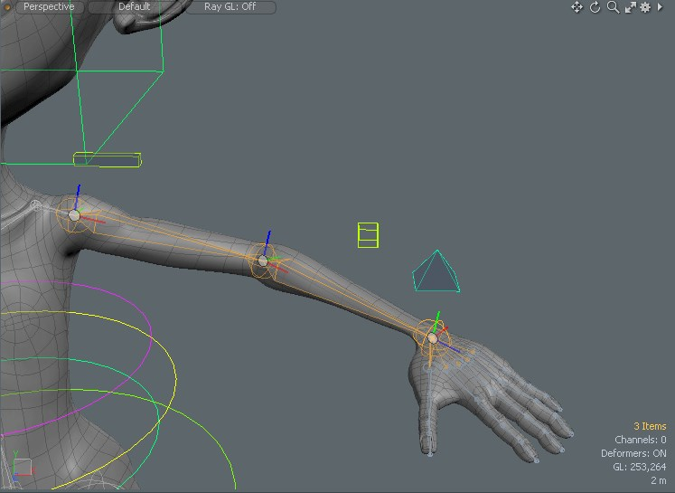

Notebook Lesson 15
- Yonseo Rigging Kit for Modo
- Projectfiles:
- project/YON_lesson15.lxo
- project/YON_lesson15_final.lxo
Arm and Hand Controls
Creating the arm controls is a similar process to creating the legs.
We wont have to create a footroll system so it will be easier.
Let's start on your first project.
Use what you've learned and practice on this project.
I will guide you through the process.
Mini Project
The Clavicle
Let's focus on the left arm.Making clavicle controls
- 1) I've created 2 locators, one with a default shape and another with a box shape.
I made the box into a rectangle and used a [Drop Action: Match] to match both locators to 'bone_L_ClavicleIN'.
- 2) I renamed my rectangle locator to 'controller_L_clavicle' and my default locator to 'effector_L_clavicle'.
I have offset the rectangle so it is easy to select.
- 3) [Enter Setup], now select 'bone_L_ClavicleIN' and ctrl+select 'effector_L_clavicle'. Assign a modifier 'Rotation'.
- 4) [Exit Setup] and test 'effector_L_clavicle' by rotating it.
Everything should work, now [Enter Setup] and parent the 'controller_L_clavicle' to the 'effector_L_clavicle'.
- 5) Parent 'controller_L_clavicle' to 'controller_chest'.
- 6) Finally [Zero > All] the 'controller_L_clavicle'.
The Arm
- 1) [Enter Setup] Select 3 bones starting at the shoulder and ending at the wrist.
- 2) Inverse Kinematics tab and click [Apply IK].
- 3) Rename the IKGoal on the wrist to 'controller_L_arm'. Give it a custom chape and offset it. I used a pyramid shape.
- 4) Select the 'Dual Joint Planar IK' and assign a [Create IK Up Vector]. Rename the 'IK Up Vector' to 'controller_L_elbow'.
[Drop Action: Match] to 'bone_L_elbow'.
- 5) Change the elbow controll shape to box. Remember to translate the elbow using the gizmo by activating [Local] and [Exit Setup].
Once its been positioned [Reset > Rotation]. Then [Zero > All].
- 5) [Enter Setup] Parent 'control_L_arm' to 'base_global'.
Finger Controls
The wrist Constraints
- 1) Create 2 locators and [Drop Action: Match] them to 'joint_L_wrist' and 'joint_R_wrist'. Rename each locator to 'effector_L_wrist'
'effector_R_wrist'.
- 2)Select the 'joint_L_wrist' and ctrl+select the 'effector_L_wrist' then assign a modifier 'Rotation'.
- 3) Parent the 'effector_L_wrist' to the 'controller_L_arm'.
- 3) Repeat for the right side. Add a modifier and parent to the controller.
Finger Controls
- 1) Create a locator, [Drop Action: Match] to the index finger bone. Rename it to 'controller_L_index'.
- 2) Duplicate 5 times for the other fingers and use a [Drop Action: Match] to position them.
- 3) Rename the controls we made to 'controller_L_****' and replace **** with the name of the finger.

- 4) [Enter Setup] Parent the finger controls to the arm control. With only the finger controls selected [Zero > All] .
- 5) [Exit Setup] and test the 'controller_L_arm' movement. It works when we move the controller only we have this
weird seperation between the controller and the hand. To fix this we need a constraint on the finger controls we created.
When adding modifiers we usually select the bone/joint first and the locator last then add a modifier. This time I will select the locator first and
the bone last then add a modifier.
- 6) [Enter Setup] Go ahead and select the 'bone_L_thumbA' and ctrl+select the 'controller_L_thumb' then add a modifier [Position].
Do this for each finger control and assign a modifier [Position] to their respective finger bones. This will make the finger controls follow the bone instead of seperating.
- 7) Repeat step 6, this time selecting the joint first and ctrl+selecting the finger control last. Use the modifier [Rotation].

- 9) [Exit Setup] Test the finger control rotation.
- 10) Do this for the rest of the knuckles. The process is the same. Take this time to practice.
Remember we don't need controls for the end joints. Add any new controls to the control group and [zero > all] transformations.
Congratulations! You've reached the end of the lesson. Go practice your skills and make better rigs!
home
Authors Note